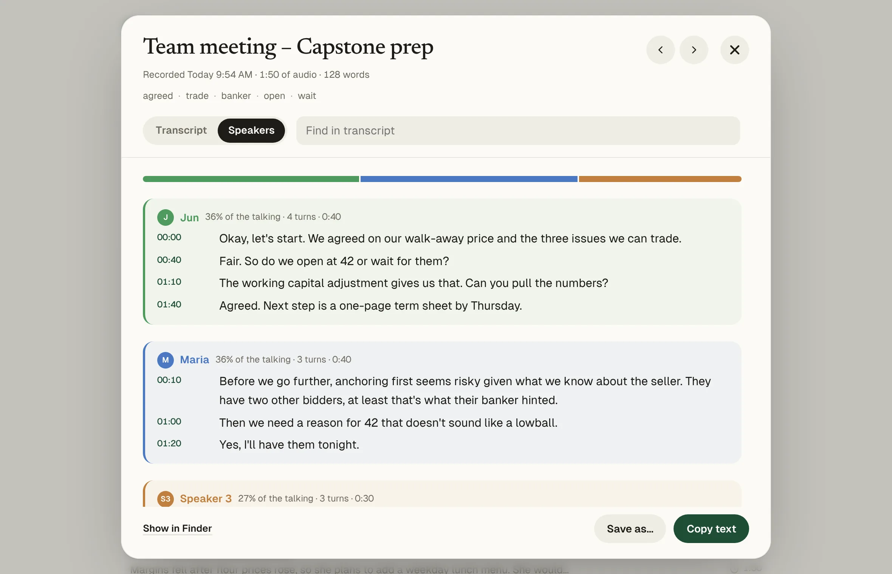

Granola and Matita both listen to your meetings from your computer instead of sending a bot. The difference is where the work happens. Granola sends the audio to a cloud transcription provider and doesn't keep it. Matita transcribes on your Mac and leaves the audio and transcript in your folders.
Matita and Granola side by side
| Matita | Granola | |
|---|---|---|
| Where speech becomes text | On your Mac | A cloud transcription provider |
| The original audio | Stays on your Mac | Not kept |
| Files you already have | Any audio or video file | Not supported |
| Free plan | Everything, no limits | Meeting history for 30 days |
| Paid plan | None | $14 per user a month |
| Meetings | No bot. Records both sides from your Mac. | No bot |
| Account | Not needed | Required |
Granola's details as listed on Granola pricing, Granola help on 5 November 2026. Prices in US dollars, before tax.
When Matita is the better fit
- You want to go back to the audio. Every line has a timestamp; click it to hear that moment.
- You record more than meetings. Lectures, interviews, iPhone Voice Memos and old files all go through the same app.
- You want everything, for good. No history limit, and transcripts are plain files you can open anywhere.
- You'd rather nothing went to the cloud. Use Ollama for summaries and nothing leaves your Mac.
When Granola is the better fit
- You like writing your own notes during the meeting and having AI fill them in. That's Granola's core idea; Matita summarises after the recording.
- You need Windows or iPhone, or want to share notes with your team in one place.

Questions
Does Matita join my meetings as a bot?
No. It records your microphone and, on macOS 14.2 or later, the sound of the call app on your Mac.
Can Matita tell who said what?
Yes. Turn on Speakers before transcribing. Choosing the actual number of people works better than Auto.
Are AI summaries private?
With Ollama, summaries are made on your Mac. If you choose Claude instead, the transcript is sent to Anthropic to write the summary.